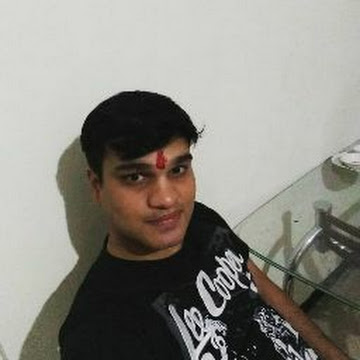

Neeraj Sharma

Summery
I have hardwoking and dedicated individual with expierience in customer service and adminstrator.
Education
- BE in CSE, from RGPV univercity in 2011.
Expierience
Teammate and AML analyst - TaskUs India
March, 2021-July, 2025.
- Answered customer inquiries via phone and email.
- Resolved customer complaints and issues.
- Maintained customer records and updated account information.
- Inspect suspecious transaction to prevent money loundering
Adminstrator in Teleperformance and HGS
April, 2018-March,2021
- Assisted with scheduling appointments and meetings
- Managed incoming and outgoing mail and correspondence
- Prepared reports and presentations using Microsoft Office Suite
Skills
- Customer service:
- Microsoft Office Suite:
- Organizational skills:
Awards and Certifications
- Mostly times awared by Top Performer in TaskUs India
Others